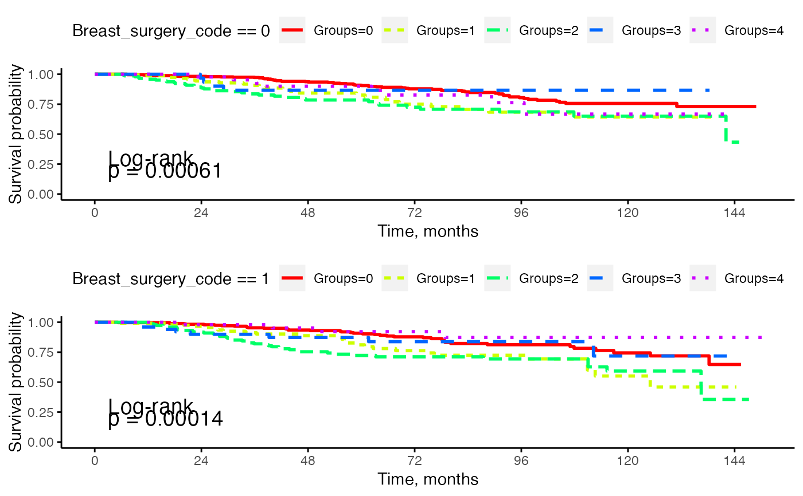

Draws Kaplan-Meier plots of the survival outcome of interest, and compares the levels of one categorical variable within each level of another categorical variable globally via log-rank tests.
Arguments
- dat
a data frame.
- patid
an integer vector of the subject IDs.
- f1
the name of the first categorical variable.
- f2
the name of the second categorical variable.
- dt_start
the name of the date of the starting point.
- dt_outcome
the name of the date of the survival outcome.
- dt_end
the name of the date of the endpoint.
- unit
the unit of measurement for the time variable; options are: "day", "month", "year".
Examples
# Read in the sample data
data(dat_da)
sample_surv_curves <- survcomp_plot(
dat = dat_da, patid = "ID..", f1 = "Groups",
f2 = "Breast_surgery_code", dt_start = "DT_dxdate2",
dt_outcome = "DT_dod", dt_end = "DT_date_last_seen"
)
